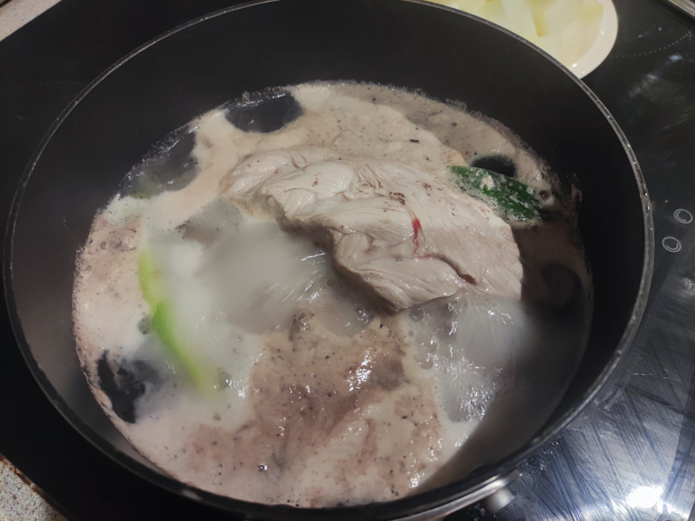
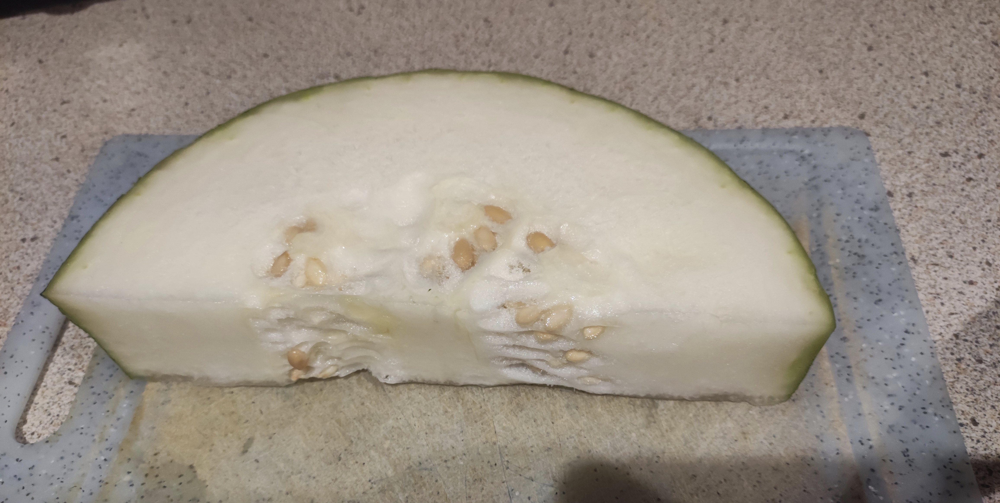
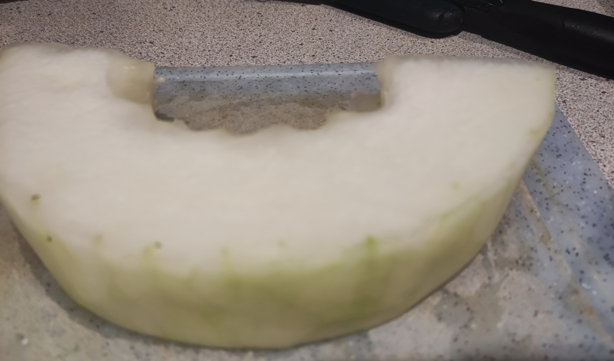
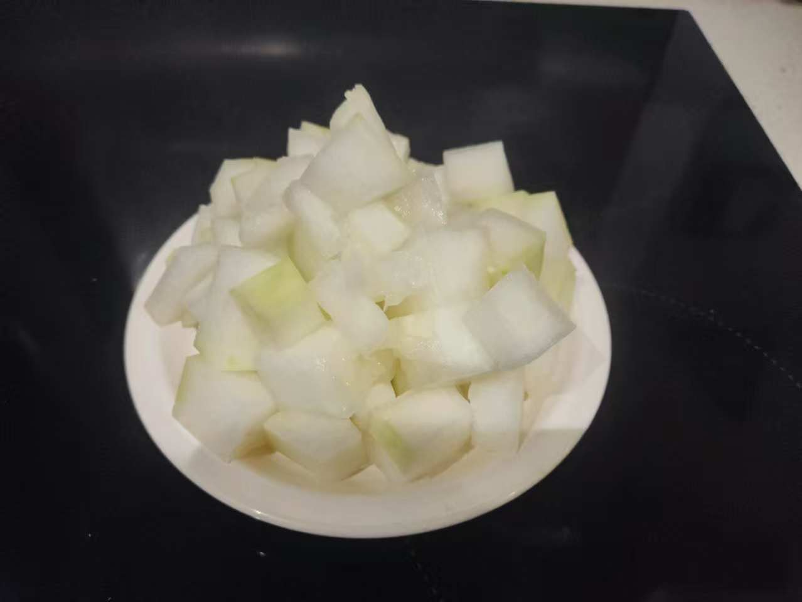
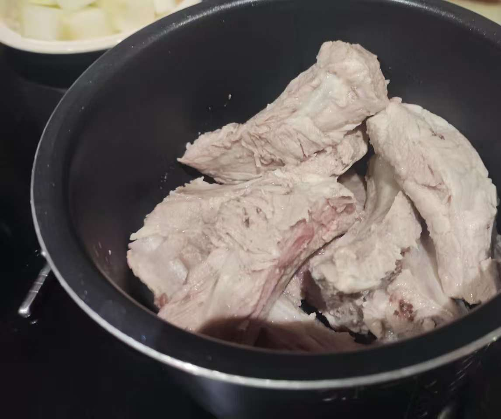
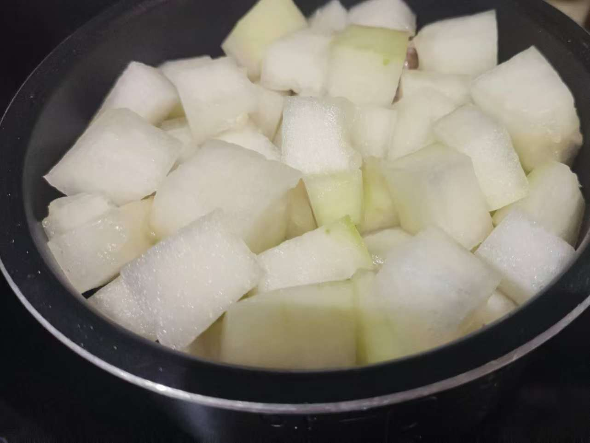
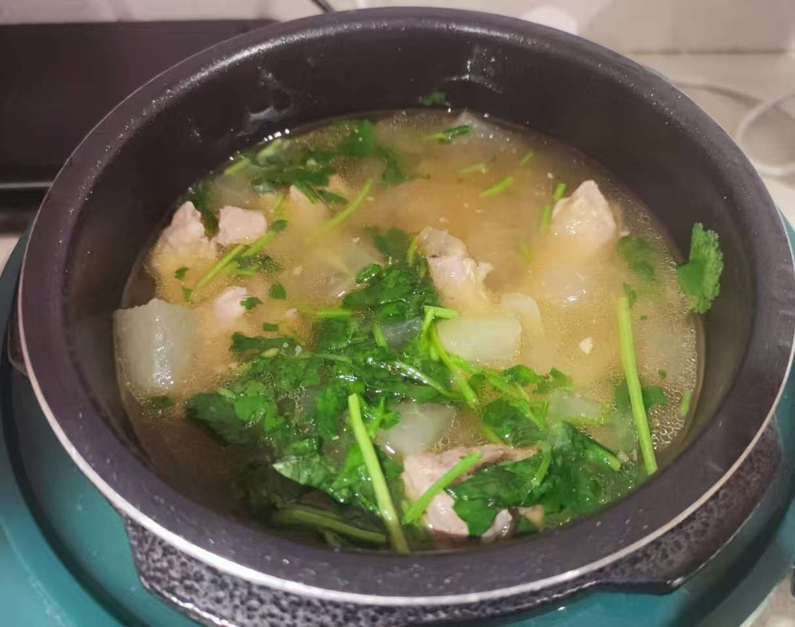

Blanch the pork ribs
- Place the ribs in cold water and bring to a boil. Add cooking wine and spring onions to help remove any unpleasant smell
- While the ribs are blanching, boil a kettle of hot water
- Once the water with the ribs comes to a boil, drain the ribs and rinse them with the hot water to remove blood and impurities 

Peel and cut the winter melon
- Remove the seeds and soft pulp from the winter melon, peel and cut it into cubes   
Prepare the soup base
- Place the blanched ribs, winter cubes, and enough water into the inner pot of the pressure cooker. No need to put any seasoning. Close the lid and cook on high pressure for about 25-30 minutes
Ps. A pressure cooker is great for pork rib soup because it makes the meat soft, juicy, and delicious.
 Season
- After the soup is cooked in the pressure cooker, carefully release the steam by turning
the valve to let the pressure out completely before opening the lid
Note: Always release the pressure fully before opening the cooker to ensure safety.
- Add a little salt, soy sauce, pepper, and the seasoning packet from the Korean noodle pack (if available), and chopped coriander, adjusting to your taste
- Stir gently so the flavors infuse into the soup 
Serve
- Ta-da! A light, flavorful, and nourishing winter melon pork rib soup is ready. Ladle into bowls and enjoy hot!